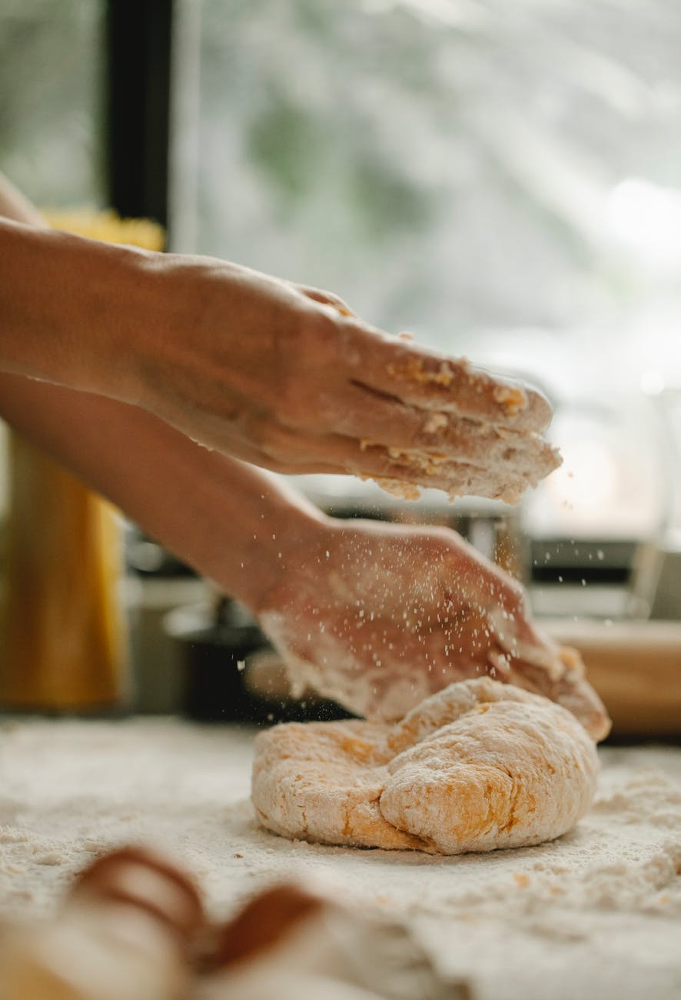
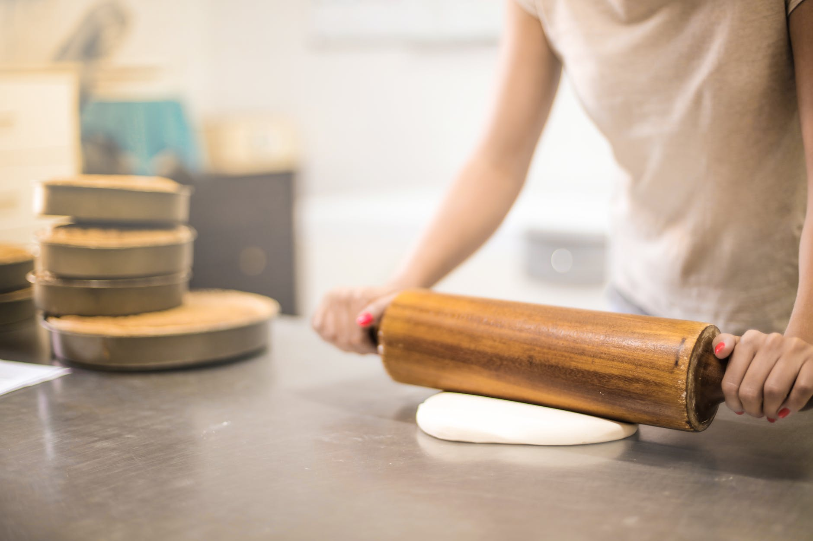
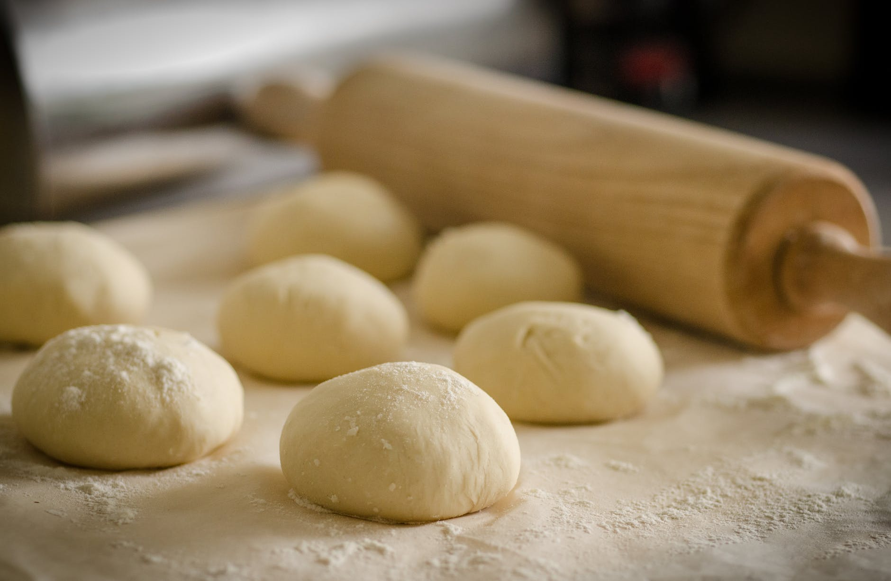

Ingredientes
Avellanas y almendras de Cataluña, mantequilla artesana y piel de limón ecológico. Productos de proximidad y de gran calidad.

Cada receta nace del respeto por los ingredientes, por el tiempo y por una manera de hacer las cosas que casi no ha cambiado con los años.

Una historia que merece ser contada
Detrás de cada carquinyoli hay una decisión valiente: apostar por un oficio tradicional, recuperar una receta y dedicarle el tiempo necesario para hacer las cosas bien. Así nació Ca la Marxanta, y así sigue creciendo.
No queremos venderte un producto, queremos que te guste.

Hay sabores que no deberían desaparecer nunca.
La tradición sigue viva
Trabajamos con mantequilla 100% artesana y con avellanas y almendras de Cataluña. La receta se inspira en unos carquinyolis más crujientes y comederos que los habituales.
Se cortan uno a uno antes de entrar al horno. De esta manera no quedan en forma de rebanada como la variante más extendida: es su rasgo característico, y es como se tiene que hacer.
Cada mañana empieza igual.
Y eso nos encanta.
La diferencia está en los detalles
Avellanas y almendras de Cataluña, mantequilla artesana y piel de limón ecológico. Productos de proximidad y de gran calidad.
Cortados uno a uno. Sin prisa, con la misma dedicación de siempre.
Una manera de hacer arraigada en el barrio de Horta, que se mantiene viva porque alguien decide protegerla.
No aceleramos el tiempo. Porque el buen sabor nunca tuvo prisa.
Nuestra colección

Almendra · Avellana
El crujiente clásico, cortado uno a uno. El que marida con cafés, tés y vinos dulces.
Descubrir →
Almendra · Avellana
Bastones de carquinyoli para desayunar y merendar. El mismo corazón, en formato bastón.
Descubrir →
5 variedades
Galletas de mantequilla 100% artesana. Tan buenas que todo el mundo preguntaba si eran pedos de monja.
Descubrir →Cada receta tiene su propia personalidad.
Con qué disfrutarlos
Porque los mejores momentos siempre se comparten.
Ca la Marxanta
Hay recetas que pasan de generación en generación. Y hay pequeños placeres que mantienen el mismo sabor de hace muchos años. Esto es Ca la Marxanta.